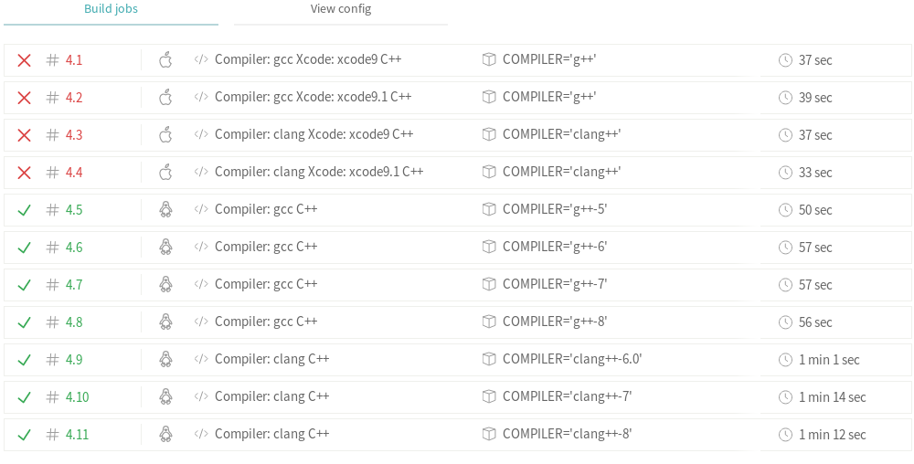

For questions, concerns and feedback:
github.com/psteinb/cppugdd-reproducibility
Peter Steinbach (MPI CBG, Scionics)
C++ UG June 13, 2019
SLUB, Dresden, Germany
psteinb_ psteinb
Performance Engineering, HPC Cluster Support, Data Science/ML
For questions, concerns and feedback:
github.com/psteinb/cppugdd-reproducibility
by Marco Verch
Growth in a time of debt, Carmen Reinhart & Kenneth Rogoff, 2010
countries with very high debt–GDP ratios suffer from low [economic] growth
adopted by many legislation(s) to cap high national debt
Graduate Student Thomas Herndon reproduced analysis
countries left-out of the calculation (columns in MS Excel)
"… render the Reinhart and Rogoff point close to irrelevant for current public policy debate."
Does High Public Debt Consistently Stifle Economic Growth? A Critique of Reinhart and Rogoff, Thomas Herndon, Michael Ash and Robert Pollin, 2013
C++ simulation
10k line segments distributed within bounding box
attraction/repulsion, creation/destruction over time
legacy code base single-threaded
CI for Linux and Mac as target OS
Best Insurance for Reproduciblity: CI

#define CATCH_CONFIG_MAIN
#include "catch2/catch.hpp"
#include <random>
TEST_CASE( "random numbers diced" ) {
//std::random_device rd{};
std::mt19937 gen{42};
std::normal_distribution<> d{5,2};
CHECK( d(gen) == Approx(3.8995310112) );
}std::mt19937 gen{42};
std::normal_distribution<> d{5,2};
for( int i = 0;i<5;++i)
CHECK( d(gen) == Approx(???) );
//Linux
3.8995310112, 6.0308661394, 5.9477217113, 7.7369002444, 3.1663462535
//MacOS
6.0308661394, 3.8995310112, 7.7369002444, 5.9477217113, 4.7517056501The most prominent example is the pseudorandom number generators used by digital computers in which knowing a starting "seed" number produces an entirely predictable string of numbers which are unpredictable without it.
The PRNGs (MT and PCG) should produce the same numbers on any platform. However, the algorithms for producing the standard random number distributions in C++ are implementation-defined. You could use (a fixed version of) boost.random to achieve cross-platform reporducable random draws.
The algorithms for producing each of the specified [random] distributions are implementation-defined.
//Linux, gcc
3.8995310112, 6.0308661394, 5.9477217113, 7.7369002444, 3.1663462535
//MacOS, xcode/clang
6.0308661394, 3.8995310112, 7.7369002444, 5.9477217113, 4.7517056501
//Windows, MSVC 19 2017
6.0308661394, 3.8995310112, 7.7369002444, 5.9477217113, 4.7517056501For details, see github.com/psteinb/cppugdd-reproducibility-cpp
Linux | ||
MacOS | ||
Windows |
random number generators (std::mt19937) in C++11/14/17 are PRNGs
random number distributions in C++11/14/17 are not reproducible across platforms
It shouldn’t be to difficult to roll your own If you restrict yourself to sensible ones (i.e. returning 32bit or 64Bit ints) and a small set of distributions.
my reference: CPP ISO Draft
pdf document yields 1499 pages
generated from .tex files (127002 LOC)
used git-tag c++17
\rSec2[rand.dist]{Random number distribution class templates}%
\indextext{random number generation!distributions|(}
\rSec3[rand.dist.general]{In general}
%...
\pnum
The algorithms for producing each
of the specified distributions are
\impldef{algorithms for producing the standard random number distributions}.
wrote python parser (AST based latex parsers libs in python are too slow)
filtered implementation-defined statements \impldef{}
filtered section headings \rSec0, \rSec1, \rSec2, …
code available at github.com/psteinb/mining-cpp17-standard.git
212 impldef statements scattered throughout
123 impldef inside std library .tex files
unordunordFor the default constructor, the number of buckets is \impldef{default number of buckets in unordered_set}.(Also applies to unordered_map, unordered_multimap, unordered_multiset)
timetimeIt is \\impldef{whether values are rounded or truncated to the required precision when converting between time_trandrand"The choice of engine type named by default_random_engine is \impldef{type of `default_random_engine}`." — numerics.tex:3781
"A value of an \impldef{exception type when random_device constructor fails} type" — numerics.tex:3871
"It is \impldef{how random_device::operator() generates values} how these values are generated." — numerics.tex:3906
"The value returned for pow(0, 0) is \impldef{value of pow(0,0)}." — numerics.tex:1198
8 times statements like "The value/type of exception thrown by X is \impldef …." — lib-intro.tex, 2 support.tex, 3 utilities.tex, 2 numerics.tex
cross-platform development is hard (in any programming language)
it appears to be even harder by support of the C++ standard (implementation-defined)
implementation-defined means work for a developer
more work developing
less fun using C++
Re-run, Repeat, Reproduce, Reuse, Replicate: Transforming Code into Scientific Contributions
Is this possible in C++? Cross-Platform and Fast! **